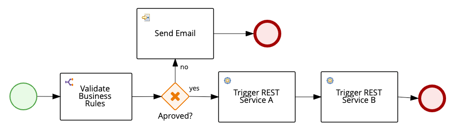
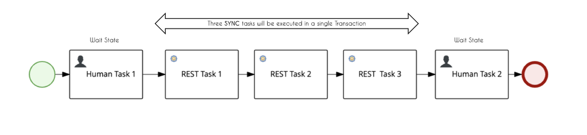
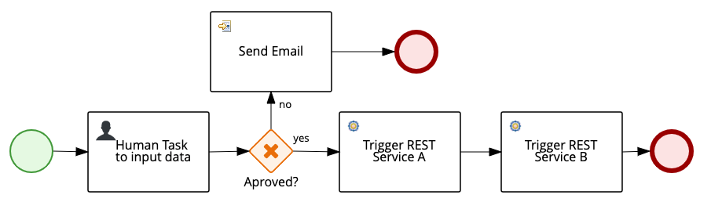
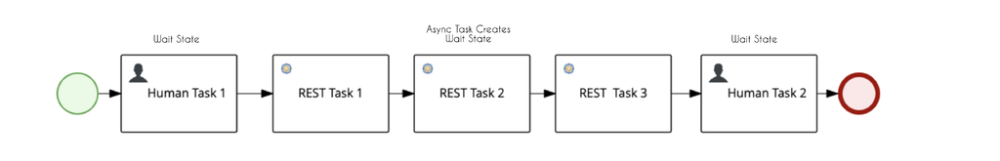

Mastering Transaction Boundaries
When planning usage of processes that are complex, long-running, and with possible points of failures like custom work item handlers, asynchronous tasks, timers, signals, and service tasks, it is crucial to understand how jBPM deals with transactions.
This knowledge might save some troubleshooting hours if you have persistent processes. “Why?“, you might ask: if the process is not properly designed and an unhandled error occurs, you may end-up with tasks being triggered more times than you planned.
Let’s drill down.
During the following process execution, jBPM will execute all these tasks in a single transaction:

Therefore, if the process reaches Service B, and it throws an exception, Service A won’t be rolled back. This process will not be persisted on the database, it is like it was never executed. This would happen because there is no wait state point in this process.

To the engine, a wait state is any point during the process execution which it might need to wait for some external intervention. When this occurs, the engine persists the process state in the database. These are the possible wait states of a process:
- Human Tasks
- Catch events (signals, timers)
- Async Tasks (marked with Async flag)
So, if we consider the following process, what will happen if Service B throws an exception?

If service B with an unrecoverable error and throwing exception, Service A would be triggered three times. (worrying, right?)
In this case, the process was persisted when the human task was completed. So, when Service B threw an exception, the transaction will roll back and return to the Human Task again. Gateway is validated, Service A is triggered the second time, and then, Service B is triggered. If B throws an exception, the execution again returns to the Human Task. This will happen as many times as configured in the engine retry count, which by default is three.
In cases like the one represented below, by simply configuring Rest Task 2 as Async you can make the engine persist the process state, and in case of an error on REST Task 3, Rest Task 1 and 2 would not be executed again.

To avoid situations like this, during the process authoring, have the transaction boundaries clear in your mind. Choose wisely which task should be async, which are the wait states, and if you need to create any wait state or handle errors with compensation events to avoid unexpected businesses outcomes.
Summary
Understanding how the engine works will help business automation specialists and developers to deliver fine-tuned projects that perform better on the jBPM engine. The business automation specialist should be able to absorb the business requirements and be able to reflect this on the project not only by authoring the assets but by improving the execution of these assets adjusting every configuration to best perform in each scenario and by being able to understand the impacts of the transaction boundaries in each delivered process.
This blog post is part of the fifth section of the jBPM Getting started series:
Techniques to boost a BA Project